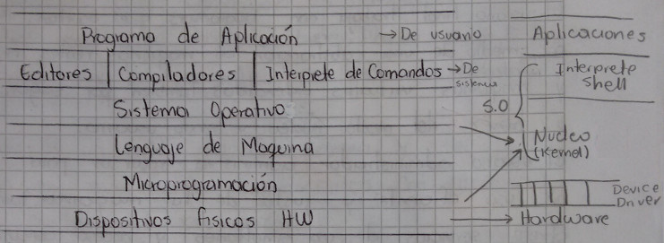

Sistema Operativo
Un sistema operativo esta conformado por el usuario final, administrador y
fabricante.
El usuario final trabaja con programas que ocultan HW por medio de una
abstracción en máquinas reales físicas y máquinas virtuales extendidas.
También por seguridad a través del modo núcleo y modo usuario.
El usuario administrador administra recursos para lograr un uso eficiente y
justo de la maquina. También ofrece servicios de uso simultaneo y acceso
concurrente.
Finalmente el usuario fabricante es el que se encarga de que por medio del S.O
se le pueda dar un valor agregado al HW para lograr mayor funcionalidad y
atraer mas usuarios.
El sistema operativo es técnicamente uno de los sistemas mas complejos de los que interactuan en el computador. Este funciona continuamente y tiene acceso a "Todos los datos" que son procesados y a todos los recursos que se usan por todos los programas que son ejecutados en procura de rechazar una tarea especifica.
Componentes Básicos

Microprograma
Conjunta de programas escritos en lenguaje de bajo nivel para el manejo de HW.
Vienen de fábrica en una memoria normalmente no modificable por el usuario
firmware.
S.O Definición
Usuario final
Conjunto de programas/funciones que ocultan los detalles del hardware, ofreciendo al usuario una vía flexible de acceso al mismo. El ocultar detalles de HW a los usuarios tiene dos objetivos.
Abstracción: Dar una visión global y abstracta del computador haciendo fácil su uso y ocultando la gestión interna. Para lograr esto los S.O construyen recursos de alto nivel llamados virtuales a base de encubrir realmente los recursos de bajo nivel llamados físicos. Desde este punto de vista la maquina física (maquina desnuda) es convertida por el S.O en una maquina virtual o maquina extendida que a diferencia de la maquina física ofrece mas funciones y mayor comodidad de utilizar.
Seguridad: Algunas instrucciones puede ocasionar serios problemas en las maquinas si son mal utilizadas, creando niveles de privilegio, protege la información, la maquina y sus procesos.
Administrador
El S.O en el administrador de los recursos ofrecidos por el HW para alcanzar un
eficaz rendimiento de los mismos, la administración fundamental se hace al
procesador, la memoria, los dispositivos I/O y la información.
El S.O proporciona además servicios que no dispone al HW. Tales servicios van
desde permitir el uso de sistema a varios usuarios simultáneamente, controlar
que las operaciones de sus procesos no se mezclen entre si, ya que muchos de
ellos pueden necesitar compartir dispositivos y que las salidas de los mismos
vayan al periférico apropiado.